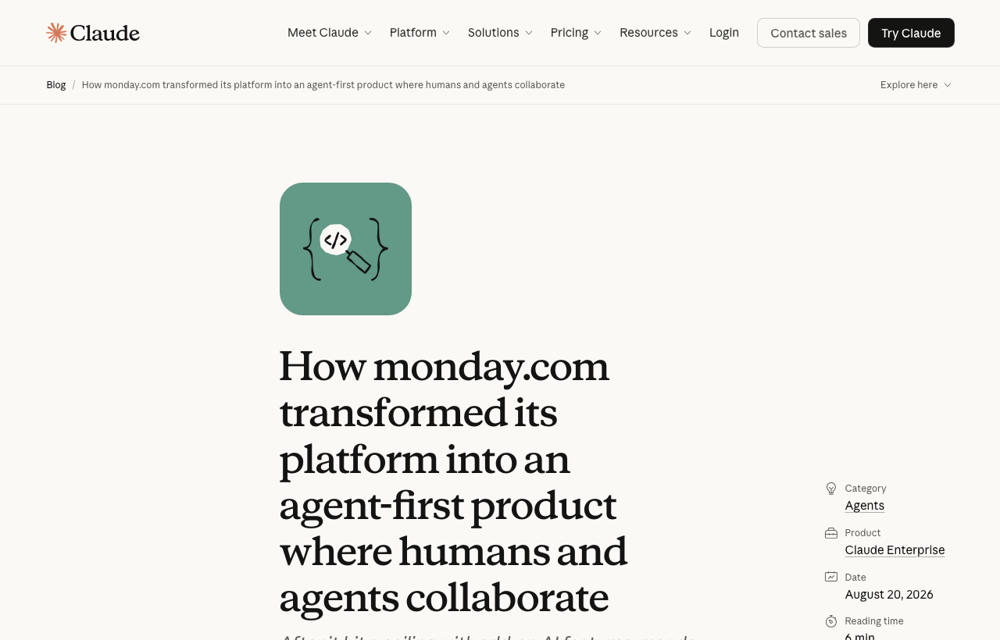

04 Claude Blog 게시일 2026.08.20
monday.com, 에이전트 중심으로 제품 다시 짰다

업무관리 SaaS monday.com이 Claude를 중심에 두고 제품을 다시 설계한 사례를 공개했다. 회사는 기존 워크플로에 AI 기능을 얹는 방식으로는 지속 사용을 만들기 어렵다고 봤다. 그래서 권한, 보드, 거버넌스, 자동화 안에 에이전트를 직접 넣는 방향으로 전환했다. 출시 뒤 두 달 동안 고객 상호작용은 500만 건 이상이었다.
핵심 브리핑
monday.com은 10여 년 전 시각적 업무관리 도구로 출발했다. 지금은 사람과 에이전트가 함께 일하는 구조로 제품을 밑바닥부터 다시 설계했다. 회사는 2026년 5월 이 변화를 내놨고, 그 뒤 두 달 동안 에이전트 상호작용이 500만 건 이상 발생했다고 밝혔다.
회사 내부의 전환은 세 단계로 진행됐다. 초기에는 기존 플랫폼에 AI 기능을 붙였다. 2025년 5월에는 사내 'AI month'를 열고 전사적으로 AI 기능 출시를 밀어붙였다.
도입 반응은 좋았지만 한계도 빨리 드러났다. monday 팀은 이를 'AI dust'라고 불렀다. 텍스트 요약과 분류 같은 기능은 있었지만 제품의 핵심 가치와 사용 습관을 바꾸지 못했다는 뜻이다.
이후 monday는 각 팀이 자체 에이전트를 만들고, 이를 플랫폼 안에서 동료처럼 쓰는 구조로 바꿨다. 에이전트마다 이름과 아바타를 주고, 트리거와 멘션으로 일을 맡길 수 있게 했다. 권한과 제한도 함께 붙였다.
적용 업무는 넓다.
- IT 티켓 분류와 자주 반복되는 요청 자동 처리
- 지식베이스 갱신과 지식 공백 탐지
- 채용 지원서 평가와 면접 일정 조율
- 영업·마케팅용 경쟁 정보 브리핑
- 회의 준비와 결정 사항의 작업 전환
Claude는 monday 안에서 네 가지 방식으로 쓰인다.
- monday Agents로 맞춤형 에이전트를 만들고 모델로 Claude를 고른다
- BYOA로 외부 Claude Managed Agents를 플랫폼 동료로 들여온다
- Agents Store의 사전 구축 에이전트를 쓴다
- Claude Coding 연동으로 대시보드에서 에이전트 작업을 계획하고 맡긴다
Claude Managed Agents는 고객 환경에서 실행된다. 결과와 상태 업데이트는 다시 티켓으로 돌아온다. 다음 에이전트나 사람이 검토를 이어받는 구조다.
주요 트렌드
이 사례의 핵심은 'AI 기능 추가'에서 '제품 재설계'로의 이동이다. monday는 별도 AI 채팅창을 붙이는 방식으로는 기업 고객이 실제 업무에 AI를 정착시키기 어렵다고 판단했다. 그래서 보드, 권한, 거버넌스, 트리거 같은 기존 업무 구조 안에 에이전트를 심었다.
파트너십 구조도 분명하다. monday는 Anthropic의 Claude를 핵심 모델로 삼되, 고객이 이미 일하는 인터페이스는 그대로 유지한다. 모델 벤더가 업무 도구 안으로 들어가고, SaaS 회사는 사용자 경험과 업무 문맥을 쥐는 분업 구조다.
고객 환경 실행을 강조한 점도 눈에 띈다. Claude Managed Agents는 고객의 자체 환경에서 실행된다고 밝혔다. 민감한 업무 데이터를 다루는 기업에는 이 배치 방식이 도입 판단의 중요한 조건이 될 수 있다.
업계의 움직임
monday는 자사 고객 사례로 수산기업 Cooke를 소개했다. Cooke는 16개국에서 사업을 운영한다. 이 회사는 monday와 Claude를 함께 써서 프로젝트 전달, 자원 관리, 계약 관리를 처리한다.
Cooke의 제품 관리자들은 승인된 차터와 요구사항을 초기 프로젝트 계획으로 바꾸고, 상태 보고서를 만들고, 리스크와 이슈를 monday RAID 로그로 보낸다. 대상은 약 200건의 진행·제안 프로젝트와 130건의 계약이다. 보고와 데이터 준비 자동화 덕분에 수작업 부담이 줄었다.
시사점과 체크포인트
금융IT 기업이 참고할 점은 명확하다. 챗봇을 따로 띄우는 방식보다 티켓, 심사, 운영, 계약, 지식관리 같은 본업 화면 안에 에이전트를 넣는 편이 실제로 더 많이 쓰일 가능성이 높다. 다만 권한과 승인 구조를 먼저 설계하지 않으면 현업이 맡기지 않는다.
우리 회사라면 다음 질문이 필요하다.
- 어떤 업무를 에이전트가 맡고, 어디서 사람 승인이 들어갈지
- 에이전트마다 권한 범위를 어떻게 다르게 줄지
- 고객 환경 실행이 필요한 업무와 외부 서비스 실행이 가능한 업무를 어떻게 나눌지
- 결과와 변경 이력을 기존 티켓·감사 체계에 어떻게 남길지
이번 사례는 상호작용 규모와 적용 사례를 보여줬지만, 비용 구조와 실패율, 품질 지표는 공개하지 않았다. 우리 회사가 비슷한 전환을 검토한다면 파일럿 범위를 좁게 잡고, 반복 업무 하나에서 승인 시간과 오류율부터 재야 한다.
주요 용어
원문 정보
제목: How monday.com transformed its platform into an agent-first product where humans and agents collaborate
게시일: 2026.08.20
출처 URL: https://claude.com/blog/how-monday-com-transformed-its-platform-into-an-agent-first-product-where-humans-and-agents-collaborate